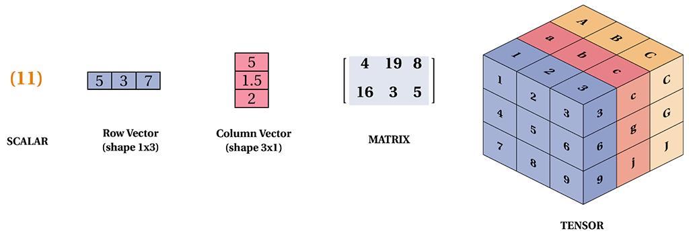
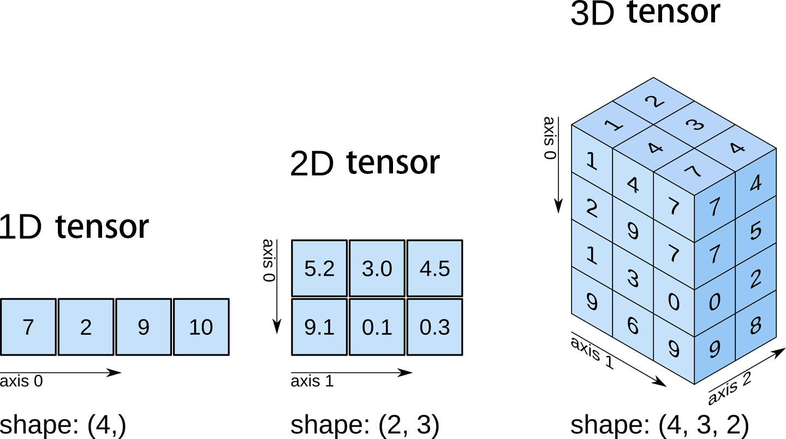

Tensors
13 minutes
We first recall from last chapter our hypothetical study of BMI, where we organized our sample in a (two-dimensional) matrix having three feature columns (weight, height, and age) and 25 rows each representing measurements from each of the 25 respondents.
| student | weight | height | age |
|---|---|---|---|
| student 1 | 153 | 68 | 46 |
| student 2 | 196 | 55 | 30 |
| … | … | … | … |
| student 25 | 163 | 58 | 26 |
Such data is called cross-sectional, since the features were measured at a particular point of time, say January 1, 2025. In order to make our toy study more involved, we now decide to collect data every day from January 1 to December 31. The data collected over the whole year may, for example, help us find temporal trends that may otherwise be obscured.
Now the question is how do we store the acquired data? Rather than juggling 365 separate matrices, one per day, we stack them into a single three-dimensional array—a tensor.

Definition
Tensors are higher-order matrices. Just as scalars are 0^{\textrm{th}}-order tensors, vectors are 1^{\textrm{st}}-order tensors, and matrices are 2^{\textrm{nd}}-order tensors, and so on.
Tensors are just containers of data. The order is chosen to match the design of the experiment. In the temporal version of our BMI study, the resulting tensor is 3rd-order.
We denote general tensors by capital letters with a special font face (e.g., \mathsf{X}, \mathsf{Y}, and \mathsf{Z}) and their indexing mechanism (e.g., x_{ijk} and [\mathsf{X}]_{1, 2i-1, 3}) follows naturally from that of matrices.
Order or Number of Axes
The number of axes of a tensor is called its order.
Plainly speaking, the order of a tensor is the number of indices required to address a single element of it.

“Rank” is an overloaded word
You will see the order of a tensor called its rank, especially in the deep-learning literature (and in TensorFlow’s API). Beware: in linear algebra the rank of a matrix means something completely different—the number of linearly independent rows, which we study in Numerical Linear Algebra.
A 5\times 5 matrix always has order 2, but its rank can be anything from 0 to 5. In this course, order means the number of axes and rank means the linear-algebra rank. NumPy avoids the ambiguity entirely: it calls the order ndim.
In our BMI study, the resulting tensor is 3rd-order, having three axes corresponding to date, respondent, and feature. Here, the dates are indexed along the first axis, or axis=0; axis indices start at 0. Along this axis sit 365 matrices, or 2nd-order tensors—each corresponding to a particular date. As a result, to read from the data tensor the measurement of a specific feature for a particular respondent on a given date, we need to specify three numbers. For example, (Aug 29, John Doe, Age) returns a single number: the recorded age of John Doe on Aug 29.
Shape of a Tensor
The shape of an rth-order tensor is a tuple of length r whose ith entry is the number of positions available along axis i.
In our BMI study, the shape of the data tensor is (365, 25, 3).
Order and shape are not independent: the order is the length of the shape tuple. Note also that a shape entry may legitimately be 1. A tensor of shape (365, 1, 3) is still 3rd-order even though its middle axis holds a single respondent; that stray 1 is not cosmetic, and in Broadcasting it becomes the most useful number in NumPy.
Which axis means what is your decision
Nothing in the mathematics forces date to be axis=0. We could equally have stored the study as (25, 365, 3), with respondents first. What the choice buys you is convenience: whatever you put on axis=0 is the thing you will most naturally loop over, slice, and reduce.
The near-universal convention in data science, and the one pandas and scikit-learn both assume, is observations along axis=0, features along the last axis. A design matrix \mathsf{X} of n observations and p features has shape (n, p). Keep to it and a great deal of downstream code will simply work.
Reading a shape out loud
Get in the habit of translating a shape into a sentence about the experiment. (365, 25, 3) is not “three sixty-five, twenty-five, three”; it is “365 days, of 25 respondents, of 3 features”. When a shape stops making a sentence, you have a bug.
The same idea in NumPy
Everything above has a direct code counterpart, which we take up properly in Introduction to NumPy. For now, note only the vocabulary translation:
| Mathematics | NumPy |
|---|---|
| tensor | ndarray |
| order (number of axes) | A.ndim |
| shape | A.shape (a tuple) |
| total number of entries | A.size |
Observe that size is the product of the shape entries: 365\times 25\times 3 = 27{,}375 numbers. That product is a useful sanity check, and it is exactly the quantity that reshape must preserve.